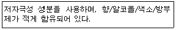
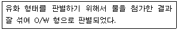

미용사(피부) (2010-07-11 기출문제)
1과목: 피부미용학
1. 여드름 관리에 효과적인 성분이 아닌 것은?
- 스테로이드(Steroid)
- 과산화 벤조인(Benzoyl Peroxide)
- 살리실산(Salicylic Acid)
- 글리콜산(Glycolic Acid)
(정답률: 58%)

2. 매뉴얼 테크닉의 방법에 대한 설명이 옳은 것은?
- 고객의 병력을 꼭 체크한다.
- 손을 밀착시키고 압은 강하게 한다.
- 관리 시 심장에서 가까운 쪽부터 시작한다.
- 충분한 상담을 통하되 피부미용사는 의사가 아니므로 몸 상태를 살펴볼 필요는 없다.
(정답률: 79%)
3. 딥클렌징(deep cleansing)시 사용되는 제품의 형태와 가장 거리가 먼 것은?
- 액체(AHA) 타입
- 고마쥐(gommage) 타입
- 스프레이(spray) 타입
- 크림(cream) 타입
(정답률: 82%)
4. 크림타입의 클렌징 제품에 대한 설명으로 옳은 것은?
- W/O타입으로 유성성분과 메이크업 제거에 효과적이다.
- 노화피부에 적합하고 물에 잘 용해가 된다.
- 친수성으로 모든 피부에 사용 가능하다.
- 클렌징 효과는 약하나 끈적임이 없고 지성피부에 특히 적합하다.
(정답률: 76%)
5. 온습포의 효과는?
- 혈행을 촉진시켜 조직의 영양공급을 돕는다.
- 혈관 수축 자용을 한다.
- 피부 수렴 작용을 한다.
- 모공을 수축 시킨다.
(정답률: 81%)
6. 유분이 많은 화장품보다는 수분공급에 효과적인 화장품을 선택하여 사용하고, 알코올 함량이 많아 피지 제거 기능과 모공수축 효과가 뛰어난 화장수를 사용하여야 할 피부유형으로 가장 적합한 것은?
- 건성피부
- 민감성피부
- 정상피부
- 지성피부
(정답률: 84%)
7. 제모의 방법에 대한 내용 중 틀린 것은?
- 왁스는 모간을 제거하는 방법이다.
- 전기응고술은 영구적인 제모방법이다.
- 전기분해술은 모유두를 파괴시키는 방법이다.
- 제모크림은 일시적인 제모방법이다.
(정답률: 65%)
8. 매뉴얼 테크닉 시 피부미용사의 자세로 가장 적합한 것은?
- 허리를 살짝 구부린다.
- 발은 가지런히 모르고 손목에 힘을 뺀다.
- 양팔은 편안한 상태로 손목에 힘을 준다.
- 발은 어깨넓이만큼 벌리고 손목에 힘을 뺀다.
(정답률: 83%)
9. 각 피부유형에 대한 설명으로 틀린 것은?
- 유성지루피부 - 과잉 분비된 피지가 피부 표면에 기름기를 만들어 항상 번질거리는 피부
- 건성 지루피부 - 피지분비기능의 상승으로 피지는 과다 분비되어 표피에 기름기가 흐르나 보습기능이 저하되어 피부표면의 당김 현상이 일어나는 피부
- 표피 수분부족 건성피부- 피부 자체의 내적 원인에 의행 피부 자체의 수화기능에 문제가 되어 생기는 피부
- 모세혈관 확장 피부 - 코와 뺨 부위의 피부가 항상 붉거나 피부 표면에 붉은 실핏줄이 보이는 피부
(정답률: 65%)
10. 콜라겐 벨벳마스크의 설명으로 틀린 것은?
- 피부의 수분 보유량을 향상시켜 잔주름을 예방한다.
- 필링 후 사용하여 피부를 진정시킨다.
- 천연 콜라겐을 냉동 건조시켜 만든 마스크이다.
- 효과를 높이기 위해 비타민을 함유한 오일을 흡수시킨 후 실시한다.
(정답률: 51%)
11. 피부미용의 기능적 영역이 아닌 것은?
- 관리적 기능
- 실제적 기능
- 심리적 기능
- 장식적 기능
(정답률: 52%)
12. 두 가지 이상의 다른 종류의 마스크를 적용시킬 경우 가장 먼저 적용시켜야 하는 마스크는?
- 가격이 높은 것
- 수분 흡수 효과를 가진 것
- 피부로의 침투시간이 긴 것
- 영양성분이 많이 함유된 것
(정답률: 75%)
13. 다음 설명에 따르는 화장품이 가장 적합한 피부형은?

- 지성피부
- 복합성피부
- 민감성피부
- 건성피부
(정답률: 90%)
14. 딥클렌징에 대한 내용으로 가장 적합한 것은?
- 노화된 각질을 부드럽게 연화하여 제거한다.
- 피부표면의 더러움을 제거하는 것이 주목적이다.
- 주로 메이크업의 제거를 위해 사용한다.
- 고마쥐, 스크럽 등이 해당하며, 화학적 필링이라고 한다.
(정답률: 63%)
15. 피부 미용의 영역이 아닌 것은?
- 눈썹 정리
- 제모(waxing)
- 피부 관리
- 모발 관리
(정답률: 91%)
16. 매뉴얼 테크닉의 부정용 대상과 가장 거리가 먼 것은?
- 임산부의 복부, 가슴 매뉴얼 테크닉
- 외상이 있거나 수술 직후
- 오랫동안 서있는 자세로 인한 다리의 부종
- 다리부위에 정맥류가 있는 경우
(정답률: 69%)
17. 올바른 피부 관리를 위한 필수조건과 가장 거리가 먼 것은?
- 관리사의 유창한 화술
- 정확한 피부타입 측정
- 화장품에 대한 지식과 응용기술
- 적절한 매뉴얼 테크닉 기술
(정답률: 92%)
18. 안면 매뉴얼 테크닉의 효과와 가장 거리가 먼 것은?
- 피부세포에 산소와 영양소를 공급한다.
- 여드름을 없애준다.
- 피부의 혈액순환을 촉진시킨다.
- 피부를 부드럽고 유연하게 해주며 근육을 이완시켜 노화를 지연시킨다.
(정답률: 93%)
19. 피부가 느끼는 오감 중에서 가장 감각이 둔감한 것은?
- 냉각(冷覺)
- 온각(溫覺)
- 통각(痛覺)
- 압각(壓覺)
(정답률: 58%)
20. 기미가 생기는 원인으로 가장 거리가 먼 것은?
- 정신적 불안
- 비타민 C 과다
- 내분비 기능장애
- 질이 좋지 않은 화장품의 사용
(정답률: 58%)
2과목: 피부학 및 해부생리학
21. 다음 중 원발진으로만 짝지어진 것은?
- 농포, 수포
- 색소침착, 찰상
- 티눈, 흉터
- 동상, 궤양
(정답률: 81%)
22. 피부의 각질(케라틴)을 만들어 내는 세포는?
- 색소세포
- 기저세포
- 각질형성세포
- 섬유아세포
(정답률: 76%)
23. 모세혈관이 위치하며 콜라겐 조직과 탄력적인 엘라스틴섬유 및 뮤코다당류로 구성이 되어 있는 피부의 부분은?
- 표피
- 유극층
- 진피
- 피하조직
(정답률: 81%)
24. 피부색소인 멜라닌을 주로 함유하고 있는 세포층은?
- 각질층
- 과립층
- 기저층
- 유극층
(정답률: 84%)
25. 나이아신 부족과 아미노산 중 트립토판 결핍으로 생기는 질병으로써 옥수수를 주식으로 하는 지역에서 자주 발생하는 것은?
- 각기증
- 괴혈병
- 구루병
- 펠라그라병
(정답률: 51%)
26. 손바닥과 발바닥 등 비교적 피부층이 두터운 부위에 주로 분포되어 있으며 수분침투를 방지하고 피부를 윤기 있게 해주는 기능을 가진 엘라이딘이라는 단백질을 함유하고 있는 표피 세포층은?
- 각질층
- 유두층
- 투명층
- 망상층
(정답률: 73%)
27. 대상포진(헤르페스)의 특징에 대한 설명으로 옳은 것은?
- 지각신경 분포를 따라 군집 수포성 발진이 생기며 통증이 동반된다.
- 바이러스를 갖고 있지 않다.
- 전염되지 않는다.
- 목과 눈꺼풀에 나타나는 전염성 비대 증식현상이다.
(정답률: 82%)
28. 다음 중 뇌, 척수를 보호하는 골이 아닌 것은?
- 두정골
- 측두골
- 척추
- 흉골
(정답률: 69%)
29. 다음 중 혈액응고와 관련이 가장 먼 것은?
- 조혈자극인자
- 피브린
- 프로트롬빈
- 칼슘이온
(정답률: 39%)
30. 평활근은 잡아당기면 쉽게 늘어나서 장력(tension)의 큰 변화 없이 본래 길이의 몇 배까지도 되는데, 이와 같은 성질을 무엇이라고 하는가?
- 연축(twitch)
- 강직(contracture)
- 긴장(tonus)
- 가소성(plasticity)
(정답률: 48%)
3과목: 화장품학
31. 다음 중 세포막의 기능 설명이 틀린 것은?
- 세포의 경계를 형성한다.
- 물질을 확산에 의해 통과시킬 수 있다.
- 단백질을 합성하는 장소이다.
- 조직을 이식할 때 자기 조직이 아닌 것을 인식할 수 있다.
(정답률: 55%)
32. 다음 중 소화기관이 아닌 것은?
- 구강
- 인두
- 기도
- 간
(정답률: 55%)
33. 다음 중 신장의 신문으로 출입하는 것이 아닌 것은?
- 요도
- 신우
- 맥관
- 신경
(정답률: 53%)
34. 다음 중 중추신경계가 아닌 것은?
- 대뇌
- 소뇌
- 뇌신경
- 척수
(정답률: 63%)
35. 열을 이용한 기기가 아닌 것은?
- 스티머
- 이온토포레시스
- 파라핀 왁스기
- 적회선등
(정답률: 68%)
36. 전기장치에서 퓨즈(fuse)의 역할은?
- 전압을 바꾸어 준다.
- 전류의 세기를 조절한다.
- 부도체에 전기가 잘 통하도록 한다.
- 전선의 과열 막아 주는 안정장치 역할을 안다.
(정답률: 71%)
37. 브러싱 기기의 올바른 사용법은?
- 브러시 끝이 눌리도록 적당한 힘을 가한다.
- 손목으로 회전브러시를 돌리면서 적용시킨다.
- 브러시는 피부에 대해 수평방향으로 적용시킨다.
- 회전내용물이 튀지 않도록 양을 적당히 조절한다.
(정답률: 65%)
38. 교류 전류로 신경근육계의 자극이나 전기 진단에 많이 이용되는 감응전류(Faradic current)의 피부 관리 효과와 가장 거리가 먼 것은?
- 근육 상태를 개선한다.
- 세포의 작용을 활발하게 하여 노폐물을 제거한다.
- 혈액순환을 촉진한다.
- 산소의 분비가 조직을 활성화 시켜준다.
(정답률: 42%)
39. 피부분석 시 사용하는 기기가 아닌 것은?
- 확대경
- 우드램프
- 스킨 스코프
- 적외선램프
(정답률: 67%)
40. 진공흡입기 적용을 금지해야 하는 경우와 가장 거리가 먼 것은?
- 모세혈관 확장피부
- 알레르기성 피부
- 지나치게 탄력이 저하된 피부
- 건성피부
(정답률: 51%)
4과목: 피부미용기기학
41. 향수를 뿌린 후 즉시 느껴지는 향수의 첫 느낌으로, 주로 휘발성이 강한 향료들로 이루어져 있는 노트(note)는?
- 탑 노트(Top note)
- 미들 노트(Middle note)
- 하트 노트(Heart note)
- 베이스 노트(Base note)
(정답률: 77%)
42. 다음 설명 중 파운데이션의 일반적이 기능과 가장 거리가 먼 것은?
- 피부색을 기호에 맞게 바꾼다.
- 피부의 기미, 주근깨 등 결점을 커버한다.
- 자외선으로부터 피부를 보호한다.
- 피지 억제와 화장을 지속시켜준다.
(정답률: 69%)
43. 다음 중 아래 설명에 적합한 유화형태의 판별법은?

- 전기전도도법
- 희석법
- 색소첨가법
- 질량분석법
(정답률: 83%)
44. 자외선 차단을 도와주는 화장품 성분이 아닌 것은?
- 파라아미노안식향산(para-aminobenzoic acid)
- 옥탈디메틸파바(octyldimethyl PABA)
- 콜라겐(collagen)
- 티타늄디옥사이드(titanium dioxide)
(정답률: 80%)
45. 바디 화장품의 종류와 사용 목적의 연결이 적합하지 않은 것은?
- 바디클렌저 - 세정/용제
- 데오도란트 파우더 - 탈색/제모
- 썬스크린 - 자외선 방어
- 바스 솔트 - 세정/용제
(정답률: 84%)
46. 향장품을 선택할 때에 검토해야 하는 조건이 아닌 것은?
- 피부나 점막, 두발 등에 손상을 주거나 알레르기 등을 일으킬 염려가 없는 것
- 구성 성분이 균일한 성상으로 혼합되어 있지 않는 것
- 사용 중이나 사용 후에 불쾌감이 없고 사용감이 산뜻한 것
- 보존성이 좋아서 잘 변질되지 않는 것
(정답률: 75%)
47. 바디 샴푸의 성질로 틀린 것은?
- 세포 간에 존재하는 지질을 가능한 보호
- 피부의 요소, 염분을 효과적으로 제거
- 세균의 증식 억제
- 세정제의 각질층 내 침투로 지질을 용출
(정답률: 52%)
48. 이/미용업소에서 전염될 수 있는 트라코마에 대한 설명 중 틀린 것은?
- 수건, 세면기 등에 의하여 감염된다.
- 전염원은 환자의 눈물, 콧물 등이다.
- 예방접종으로 사전 예방할 수 있다.
- 실명의 원인이 될 수 있다.
(정답률: 61%)
49. 다음 중 쥐와 관계없는 전염병은?
- 유행성출혈열
- 페스트
- 공수병
- 살모넬라증
(정답률: 68%)
50. 실내의 가장 쾌적한 온도와 습도는?
- 14 ℃ , 20%
- 16 ℃ ,30%
- 18 ℃ , 60%
- 20 ℃ ,89%
(정답률: 77%)
5과목: 공중위생학
51. 보건행정의 특성과 가장 거리가 먼 것은?
- 공공성
- 교육성
- 정치성
- 과학성
(정답률: 81%)
52. 이/미용업 종사자가 손을 씻을 때 많이 사용하는 소독약은?
- 크레졸 수
- 페놀 수
- 과산화수소
- 역성 비누
(정답률: 70%)
53. 다음 중 예방법으로 생균백신을 사용하는 것은?
- 홍역
- 콜레라
- 디프테리아
- 파상풍
(정답률: 52%)
54. 인체의 창상용 소독약으로 부적당한 것은?
- 승홍수
- 머큐로크롬액
- 희옥도정기
- 아크리놀
(정답률: 66%)
55. 다음 소독제 중에서 할로겐계에 속하지 않는 것은?
- 표백분
- 석탄산
- 차아염소산 나트륨
- 염소 유기화합물
(정답률: 48%)
56. 건전한 영업질서를 위하여 공중위생영업자가 준수하여야 할 사항을 준수하지 아니한 자에 대한 벌칙기준은?
- 1년 이하의 징역 또는 1천만원 이하의 벌금
- 6월 이하의 징역 또는 500만원 이하의 벌금
- 3월 이하의 징역 또는 300만원 이하의 벌금
- 300만원 이하의 벌금
(정답률: 41%)
57. 이/미용업소 내에서 게시하지 않아도 되는 것은?
- 이/미용업 신고증
- 개설자의 면허증 원본
- 개설자의 건강진단서
- 요금표
(정답률: 88%)
58. 이/미용사의 면허를 받지 않은 자가 이/미용의 업무를 하였을 때의 벌칙기준은?
- 100만원 이하의 벌금
- 200만원 이하의 벌금
- 300만원 이하의 벌금
- 500만원 이하의 벌금
(정답률: 61%)
59. 이/미용업영업자가 신고를 하지 아니하고 영업소의 상호를 변경한 때의 1차 위반 행정처분기준은?
- 경고 또는 개선명령
- 영업정지 3월
- 영업허가 취소
- 영업장 폐쇄명령
(정답률: 52%)
60. 다음 중 공중위생감시원의 업무범위가 아닌 것은?
- 공중위생 영업 관련 시설 및 설비의 위생상태 확인 및 검사에 관한 사항
- 공중위생영업소의 위생서비스 수준평가에 관한 사항
- 공중위생영업소 개설자의 위생교육 이행여부 확인에 관한 사항
- 공중위생영업자의 위생관리의무 영업자준수 사항 이행여부의 확인에 관한 사항
(정답률: 59%)